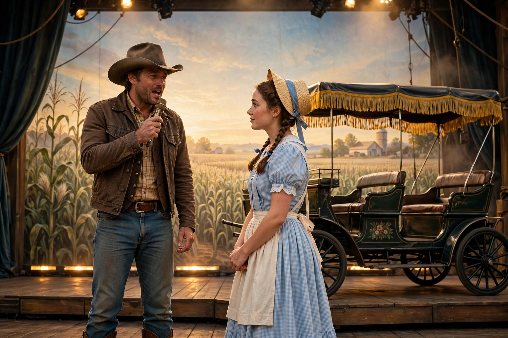

| Oklahoma! | |
|---|---|
 | |
| Music | Richard Rodgers |
| Lyrics | Oscar Hammerstein II |
| Book | Oscar Hammerstein II |
| Basis | Green Grow the Lilacs (1931 play) by Lynn Riggs |
| Premiere | March 31, 1943 — St. James Theatre, Broadway |
| Choreography | Agnes de Mille |
Oklahoma! is the first musical written by the duo of Rodgers and Hammerstein. The musical is based on Lynn Riggs's 1931 play Green Grow the Lilacs. Set in farm country outside the town of Claremore, Indian Territory, in 1906, it tells the story of farm girl Laurey Williams and her courtship by two rival suitors: cowboy Curly McLain and the sinister farmhand Jud Fry.
The original Broadway production opened on March 31, 1943. It was a box-office smash, running for an unprecedented 2,212 performances, and spawned a decade-long national tour and a hit 1947 London production. A film adaptation followed in 1955, shot in Todd-AO and starring Gordon MacRae and Shirley Jones. Major revivals include the Royal National Theatre's 1998 production directed by Trevor Nunn (later on Broadway), and Daniel Fish's radical 2019 Broadway revival, staged in the round with a country band and a darker reading of the material, which won the Tony Award for Best Revival of a Musical.
The score includes "Oh, What a Beautiful Mornin'", "The Surrey with the Fringe on Top", "People Will Say We're in Love", "I Cain't Say No", and the title song — adopted as the official state song of Oklahoma in 1953. The show is credited with inaugurating the modern "book musical": songs and dances — above all Agnes de Mille's dream ballet ending Act I — grow out of character and plot rather than interrupting them. Its original cast album was a landmark in the commercial recording of Broadway scores.
In 1944, Rodgers and Hammerstein received a special Pulitzer Prize for Oklahoma!. The musical's integration of music, dance, and story set the template for the golden age of the Broadway musical and for the team's own subsequent work.